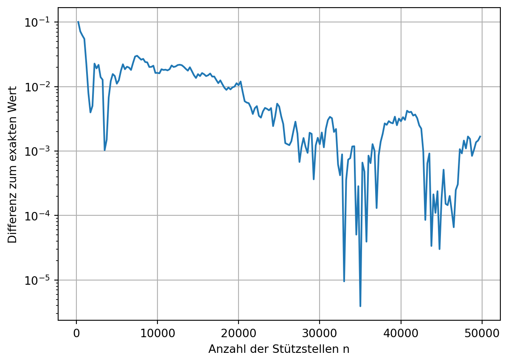
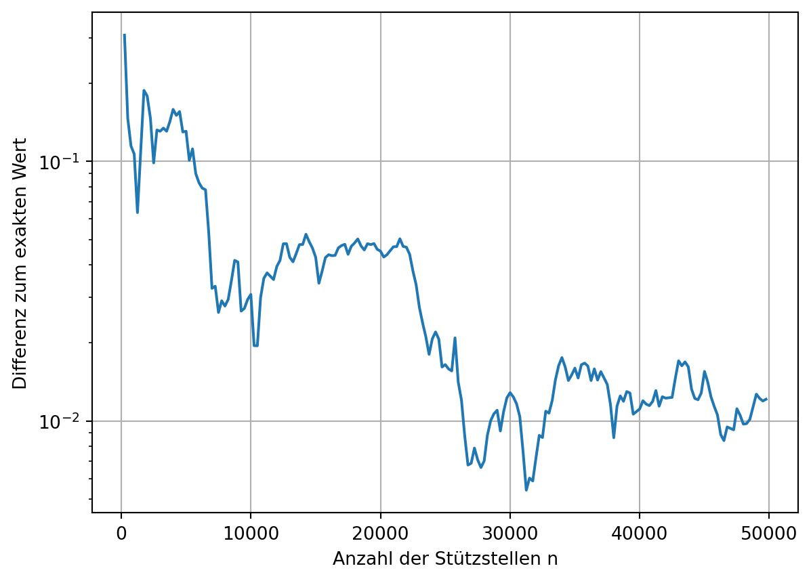

import numpy as np
import matplotlib.pyplot as plt
import seaborn as sns34 Integration
Die Bildung von Integralen findet beispielsweise bei der Bestimmung von Flächeninhalten oder von Gesamtkräften Anwendung. Formal wird das bestimmte Integral \(\mathsf{I}\) der Funktion \(\mathsf{f(x)}\) auf dem Intervall \(\mathsf{x \in [a,b]}\) wie folgt dargestellt.
\[ \mathsf{I = \int_a^b f(x)\ dx} \]
Im Allgemeinen kann das Integral nicht analytisch gelöst werden, da die Stammfunktion \(\mathsf{F(x)}\) nicht leicht zu bestimmen ist. In solchen Fällen können numersiche Verfahren eingesetzt werden um den Integralwert zu approximieren. Die numerische Integration wird oft auch als numersiche Quadratur bezeichnet.
Dieses Kapitel bietet eine kurze Übersicht von numerischen Integrationsmethoden:
- Ober- und Untersumme
- Quadratur
- Monte-Carlo
34.0.1 Ober- und Untersumme
Eine der grundlegendsten Arten Integrale von Funktionen zu bestimmen sind die Ober- und Untersumme. Sie nähern den Integralwert durch eine Abschätzung nach oben bzw. unten an. Mit einer steigenden Anzahl von Stützstellen, d.h. Positionen an welchen die Funktion ausgewertet wird, konvergieren beide Abschätzungen gegen den Integralwert.
34.1 Definition
Für die Bildung der Ober- und Untersumme, werden gleichmäßig verteilte Stützstellen auf dem Intervall \(\mathsf{[a,b]}\) benötigt. Werden \(\mathsf{n+1}\) Stützstellen gewählt, so gilt:
\[ a = x_0 < x_1 < \cdots < x_n = b \]
Der Abstand der Stützstellen beträgt \(\mathsf{\Delta x = (b-a)/(n-1)}\). Auf jedem der \(\mathsf{n}\) Teilintervalle \(\mathsf{[x_{i-1}, x_{i}]}\) wird nun der maximale bzw. minimale Wert der Funktion \(\mathsf{f(x)}\) bestimmt und als \(\mathsf{O_i}\) bzw. \(\mathsf{U_i}\) definiert.
\[ \mathsf{O_i = \max\left( f(x) | x \in [x_{i-1}, x_{i}] \right)} \] \[ \mathsf{U_i = \min\left( f(x) | x \in [x_{i-1}, x_{i}] \right)} \]
Die gesuchte Approximation des Integrals ist die Summe der \(\mathsf{O_i}\) bzw. \(\mathsf{U_i}\) mal der Breite des Teilintervalls, hier \(\mathsf{\Delta x}\):
\[ \sum_{i=1}^n \Delta x U_i \lesssim I \lesssim \sum_{i=1}^n \Delta x O_i \]
34.2 Beispiel
Beispielhaft soll folgendes Integral bestimmt werden
\[ \mathsf{I = \int_0^2\sin(3x) + 2x \ dx} \]
def fkt(x):
return np.sin(3*x) + 2*x
# Daten für die Visualisierung
x = np.linspace(0, 2, 100)
y = fkt(x)
# Exakte Lösung
I_exakt = (-1/3*np.cos(3*2) + 2**2) - (-1/3)Als erstes werden die Stützstellen gleichmäßig im Intervall \(\mathsf{[0,2]}\) verteilt.
n = 5
xi = np.linspace(0, 2, n)
yi = fkt(xi)Die beiden Summen benötigen die Extremwerte der zu integrierenden Funktion in den Teilintervallen. Diese werden mit Hilfe einer Funktionsauswertung auf dem Teilintervall bestimmt. Für die nachfolgende Visualisierung hat die Menge der Summen ebenfalls \(\mathsf{n}\) Elemente.
oben = np.zeros(n)
unten = np.zeros(n)
for i in range(len(oben)-1):
cx = np.linspace(xi[i], xi[i+1], 50)
cy = fkt(cx)
oben[i+1] = np.max(cy)
unten[i+1] = np.min(cy)Die ersten Elemente der beiden Summenlisten werden auf die ersten Funktionswerte gesetzt, dies dient nur der folgenden Darstellung.
oben[0] = yi[0]
unten[0] = yi[0]Visualisierung der einzelnen Funktionen.
plt.plot(x, y, label='Funktion')
plt.scatter(xi, yi, label='Stützstellen', c='C3', zorder=3)
plt.plot(xi, oben, drawstyle='steps-pre', label='Obersumme')
plt.plot(xi, unten, drawstyle='steps-pre', label='Untersumme')
plt.vlines(xi, ymin=unten, ymax=oben, color='C1', alpha=0.6)
plt.vlines(xi, ymin=0, ymax=unten, color='C2', alpha=0.6)
plt.xlabel('x')
plt.ylabel('y')
plt.grid()
plt.legend();Das obige Verfahren kann nun in einer Funktion zusammengefasst werden, welche die Summen der beiden Folgen zurückgibt.
def ou_summe(n, a=0, b=2):
xi = np.linspace(a, b, n)
yi = fkt(xi)
dx = xi[1] - xi[0]
sum_oben = 0
sum_unten = 0
for i in range(n-1):
cx = np.linspace(xi[i], xi[i+1], 50)
cy = fkt(cx)
oben = np.max(cy)
unten = np.min(cy)
sum_oben += dx * oben
sum_unten += dx * unten
return sum_oben, sum_untenFür eine systematische Untersuchung des Konvergenzverhaltens, wird die Integrationsfunktion für verschiedene Anzahlen von Stützstellen aufgerufen.
n_max = 100
ns = np.arange(2, n_max, 1, dtype=int)
os = np.zeros(len(ns))
us = np.zeros(len(ns))
for i, n in enumerate(ns):
o, u = ou_summe(n)
os[i] = o
us[i] = uDie graphische Darstellung der beiden Summen zeigt eine kontinuierliche Annäherung dieser.
plt.plot(ns, os, label='Obersumme')
plt.plot(ns, us, label='Untersumme')
plt.axhline(y=I_exakt, color='C3', alpha=0.3)
plt.xlabel('Anzahl der Stützstellen n')
plt.ylabel('Integralwert')
plt.grid()
plt.legend();Dies wird insbesondere deutlich, wenn die Differenz der beiden Summen aufgetragen wird. Mit einer logarithmischen Darstellung kann die kontinuierliche Annäherung auch quantitativ abgelesen werden.
plt.plot(ns, os-us)
plt.xlabel('Anzahl der Stützstellen n')
plt.ylabel('Differenz Ober- und Untersumme')
# plt.xscale('log')
plt.yscale('log')
plt.grid();34.3 Interpolation
Bei der Bildung der Ober- und Untersumme wurde die zu integrierende Funktion durch einen konstanten Wert in den Teilintervallen zwischen den Stützstellen angenähert. Eine genauere Berechnung des Integrals kann durch eine bessere Interpolation erfolgen. Dazu eignen sich Polynome, da diese leicht zu Integrieren sind.
34.3.1 Trapezregel
Die Trapezregel beruht auf der Annäherung der zu integrierenden Funktion durch Geraden, d.h. Polynome vom Grad 1, auf den Teilintervallen. Die Approximation des Integralwertes ergibt sich entsprechend aus den Flächeninhalten der so entstandenen Trapeze.
Wie im vorhergehenden Kapitel wird das Verfahren anhand folgender Funktion demonstriert
\[ \mathsf{I = \int_0^2\sin(3x) + 2x \ dx} \]
def fkt(x):
return np.sin(3*x) + 2*x
# Daten für die Visualisierung
x = np.linspace(0, 2, 100)
y = fkt(x)
# Exakte Lösung
I_exakt = (-1/3*np.cos(3*2) + 2**2) - (-1/3)Bildung der Stützpunkte:
n = 5
xi = np.linspace(0, 2, n)
yi = fkt(xi)Zunächst erfolgt noch die Visualisierung des Verfahrens.
plt.plot(x, y, label='Funktion')
plt.scatter(xi, yi, label='Stützstellen', c='C3')
plt.plot(xi, yi, label='Approximation', c='C1')
plt.vlines(xi, ymin=0, ymax=yi, color='C1', alpha=0.3)
plt.grid()
plt.legend();Die Integration selbst kann mittels der Funktion scipy.integrate.trapezoid ausgeführt werden.
res = scipy.integrate.trapezoid(yi, xi)
print(f"Integralwert mit {n} Stützstellen: {res:.4f}")Integralwert mit 5 Stützstellen: 4.0107Der so ermittelte Wert nähert sich dem exakten Wert mit zunehmender Anzahl der Stützstellen.
n_max = 50
ns = np.arange(2, n_max, 1, dtype=int)
tr = np.zeros(len(ns))
for i, n in enumerate(ns):
xi = np.linspace(0, 2, n)
yi = fkt(xi)
tr[i] = scipy.integrate.trapezoid(yi, xi)plt.plot(ns, tr)
plt.axhline(y=I_exakt, color='C3', alpha=0.3)
plt.xlabel('Anzahl der Stützstellen n')
plt.ylabel('Integralwert')
plt.grid();
plt.plot(ns, np.abs(tr-I_exakt))
plt.xlabel('Anzahl der Stützstellen n')
plt.ylabel('Differenz zum exakten Wert')
# plt.xscale('log')
plt.yscale('log')
plt.grid();34.3.2 Simpsonregel
Die Verwendung eines Polynoms vom zweiten Grad führt zur Simpsonregel. Hierzu wird die Funktion an einem Zwischenwert, mittig im Teilintervall, ausgewertet und zusammen mit den Werten an den Stützstellen zur Bestimmung der Polynomkoeffizienten verwendet.
Anhand des obigen Beispiels wird die Simpsonregel visuell demonstriert.
n = 5
xi = np.linspace(0, 2, n)
yi = fkt(xi)plt.plot(x, y, label='Funktion')
plt.scatter(xi, yi, label='Stützstellen', c='C3')
# Bestimmung und Plotten der Polynome
for i in range(n-1):
dx = xi[i+1] - xi[i]
cx = (xi[i] + xi[i+1]) / 2
cy = fkt(cx)
P = np.polyfit([xi[i], cx, xi[i+1]], [yi[i], cy, yi[i+1]], 2)
Px = np.linspace(xi[i], xi[i+1], 20)
Py = np.polyval(P, Px)
label=None
if i==0:
label='Approximation'
plt.plot(Px, Py, color='C1', label=label)
plt.vlines(xi, ymin=0, ymax=yi, color='C1', alpha=0.3)
plt.grid()
plt.legend();Die Simpsonregel ist bereits in der Funktion scipy.integrate.simpson implementiert. Im Folgenden wird nur die Differenz zur Trapezregel demonstriert.
n_max = 50
ns = np.arange(3, n_max, 2, dtype=int)
si = np.zeros(len(ns))
tr = np.zeros(len(ns))
for i, n in enumerate(ns):
xi = np.linspace(0, 2, n)
yi = fkt(xi)
si[i] = scipy.integrate.simpson(yi, xi)
tr[i] = scipy.integrate.trapezoid(yi, xi)/var/folders/p_/ks3trxjx0jd839_g4g0vm4nc0000gn/T/ipykernel_39894/1922737122.py:9: DeprecationWarning: You are passing x=[0. 1. 2.] as a positional argument. Please change your invocation to use keyword arguments. From SciPy 1.14, passing these as positional arguments will result in an error.
si[i] = scipy.integrate.simpson(yi, xi)
/var/folders/p_/ks3trxjx0jd839_g4g0vm4nc0000gn/T/ipykernel_39894/1922737122.py:9: DeprecationWarning: You are passing x=[0. 0.5 1. 1.5 2. ] as a positional argument. Please change your invocation to use keyword arguments. From SciPy 1.14, passing these as positional arguments will result in an error.
si[i] = scipy.integrate.simpson(yi, xi)
/var/folders/p_/ks3trxjx0jd839_g4g0vm4nc0000gn/T/ipykernel_39894/1922737122.py:9: DeprecationWarning: You are passing x=[0. 0.33333333 0.66666667 1. 1.33333333 1.66666667
2. ] as a positional argument. Please change your invocation to use keyword arguments. From SciPy 1.14, passing these as positional arguments will result in an error.
si[i] = scipy.integrate.simpson(yi, xi)
/var/folders/p_/ks3trxjx0jd839_g4g0vm4nc0000gn/T/ipykernel_39894/1922737122.py:9: DeprecationWarning: You are passing x=[0. 0.25 0.5 0.75 1. 1.25 1.5 1.75 2. ] as a positional argument. Please change your invocation to use keyword arguments. From SciPy 1.14, passing these as positional arguments will result in an error.
si[i] = scipy.integrate.simpson(yi, xi)
/var/folders/p_/ks3trxjx0jd839_g4g0vm4nc0000gn/T/ipykernel_39894/1922737122.py:9: DeprecationWarning: You are passing x=[0. 0.2 0.4 0.6 0.8 1. 1.2 1.4 1.6 1.8 2. ] as a positional argument. Please change your invocation to use keyword arguments. From SciPy 1.14, passing these as positional arguments will result in an error.
si[i] = scipy.integrate.simpson(yi, xi)
/var/folders/p_/ks3trxjx0jd839_g4g0vm4nc0000gn/T/ipykernel_39894/1922737122.py:9: DeprecationWarning: You are passing x=[0. 0.16666667 0.33333333 0.5 0.66666667 0.83333333
1. 1.16666667 1.33333333 1.5 1.66666667 1.83333333
2. ] as a positional argument. Please change your invocation to use keyword arguments. From SciPy 1.14, passing these as positional arguments will result in an error.
si[i] = scipy.integrate.simpson(yi, xi)
/var/folders/p_/ks3trxjx0jd839_g4g0vm4nc0000gn/T/ipykernel_39894/1922737122.py:9: DeprecationWarning: You are passing x=[0. 0.14285714 0.28571429 0.42857143 0.57142857 0.71428571
0.85714286 1. 1.14285714 1.28571429 1.42857143 1.57142857
1.71428571 1.85714286 2. ] as a positional argument. Please change your invocation to use keyword arguments. From SciPy 1.14, passing these as positional arguments will result in an error.
si[i] = scipy.integrate.simpson(yi, xi)
/var/folders/p_/ks3trxjx0jd839_g4g0vm4nc0000gn/T/ipykernel_39894/1922737122.py:9: DeprecationWarning: You are passing x=[0. 0.125 0.25 0.375 0.5 0.625 0.75 0.875 1. 1.125 1.25 1.375
1.5 1.625 1.75 1.875 2. ] as a positional argument. Please change your invocation to use keyword arguments. From SciPy 1.14, passing these as positional arguments will result in an error.
si[i] = scipy.integrate.simpson(yi, xi)
/var/folders/p_/ks3trxjx0jd839_g4g0vm4nc0000gn/T/ipykernel_39894/1922737122.py:9: DeprecationWarning: You are passing x=[0. 0.11111111 0.22222222 0.33333333 0.44444444 0.55555556
0.66666667 0.77777778 0.88888889 1. 1.11111111 1.22222222
1.33333333 1.44444444 1.55555556 1.66666667 1.77777778 1.88888889
2. ] as a positional argument. Please change your invocation to use keyword arguments. From SciPy 1.14, passing these as positional arguments will result in an error.
si[i] = scipy.integrate.simpson(yi, xi)
/var/folders/p_/ks3trxjx0jd839_g4g0vm4nc0000gn/T/ipykernel_39894/1922737122.py:9: DeprecationWarning: You are passing x=[0. 0.1 0.2 0.3 0.4 0.5 0.6 0.7 0.8 0.9 1. 1.1 1.2 1.3 1.4 1.5 1.6 1.7
1.8 1.9 2. ] as a positional argument. Please change your invocation to use keyword arguments. From SciPy 1.14, passing these as positional arguments will result in an error.
si[i] = scipy.integrate.simpson(yi, xi)
/var/folders/p_/ks3trxjx0jd839_g4g0vm4nc0000gn/T/ipykernel_39894/1922737122.py:9: DeprecationWarning: You are passing x=[0. 0.09090909 0.18181818 0.27272727 0.36363636 0.45454545
0.54545455 0.63636364 0.72727273 0.81818182 0.90909091 1.
1.09090909 1.18181818 1.27272727 1.36363636 1.45454545 1.54545455
1.63636364 1.72727273 1.81818182 1.90909091 2. ] as a positional argument. Please change your invocation to use keyword arguments. From SciPy 1.14, passing these as positional arguments will result in an error.
si[i] = scipy.integrate.simpson(yi, xi)
/var/folders/p_/ks3trxjx0jd839_g4g0vm4nc0000gn/T/ipykernel_39894/1922737122.py:9: DeprecationWarning: You are passing x=[0. 0.08333333 0.16666667 0.25 0.33333333 0.41666667
0.5 0.58333333 0.66666667 0.75 0.83333333 0.91666667
1. 1.08333333 1.16666667 1.25 1.33333333 1.41666667
1.5 1.58333333 1.66666667 1.75 1.83333333 1.91666667
2. ] as a positional argument. Please change your invocation to use keyword arguments. From SciPy 1.14, passing these as positional arguments will result in an error.
si[i] = scipy.integrate.simpson(yi, xi)
/var/folders/p_/ks3trxjx0jd839_g4g0vm4nc0000gn/T/ipykernel_39894/1922737122.py:9: DeprecationWarning: You are passing x=[0. 0.07692308 0.15384615 0.23076923 0.30769231 0.38461538
0.46153846 0.53846154 0.61538462 0.69230769 0.76923077 0.84615385
0.92307692 1. 1.07692308 1.15384615 1.23076923 1.30769231
1.38461538 1.46153846 1.53846154 1.61538462 1.69230769 1.76923077
1.84615385 1.92307692 2. ] as a positional argument. Please change your invocation to use keyword arguments. From SciPy 1.14, passing these as positional arguments will result in an error.
si[i] = scipy.integrate.simpson(yi, xi)
/var/folders/p_/ks3trxjx0jd839_g4g0vm4nc0000gn/T/ipykernel_39894/1922737122.py:9: DeprecationWarning: You are passing x=[0. 0.07142857 0.14285714 0.21428571 0.28571429 0.35714286
0.42857143 0.5 0.57142857 0.64285714 0.71428571 0.78571429
0.85714286 0.92857143 1. 1.07142857 1.14285714 1.21428571
1.28571429 1.35714286 1.42857143 1.5 1.57142857 1.64285714
1.71428571 1.78571429 1.85714286 1.92857143 2. ] as a positional argument. Please change your invocation to use keyword arguments. From SciPy 1.14, passing these as positional arguments will result in an error.
si[i] = scipy.integrate.simpson(yi, xi)
/var/folders/p_/ks3trxjx0jd839_g4g0vm4nc0000gn/T/ipykernel_39894/1922737122.py:9: DeprecationWarning: You are passing x=[0. 0.06666667 0.13333333 0.2 0.26666667 0.33333333
0.4 0.46666667 0.53333333 0.6 0.66666667 0.73333333
0.8 0.86666667 0.93333333 1. 1.06666667 1.13333333
1.2 1.26666667 1.33333333 1.4 1.46666667 1.53333333
1.6 1.66666667 1.73333333 1.8 1.86666667 1.93333333
2. ] as a positional argument. Please change your invocation to use keyword arguments. From SciPy 1.14, passing these as positional arguments will result in an error.
si[i] = scipy.integrate.simpson(yi, xi)
/var/folders/p_/ks3trxjx0jd839_g4g0vm4nc0000gn/T/ipykernel_39894/1922737122.py:9: DeprecationWarning: You are passing x=[0. 0.0625 0.125 0.1875 0.25 0.3125 0.375 0.4375 0.5 0.5625
0.625 0.6875 0.75 0.8125 0.875 0.9375 1. 1.0625 1.125 1.1875
1.25 1.3125 1.375 1.4375 1.5 1.5625 1.625 1.6875 1.75 1.8125
1.875 1.9375 2. ] as a positional argument. Please change your invocation to use keyword arguments. From SciPy 1.14, passing these as positional arguments will result in an error.
si[i] = scipy.integrate.simpson(yi, xi)
/var/folders/p_/ks3trxjx0jd839_g4g0vm4nc0000gn/T/ipykernel_39894/1922737122.py:9: DeprecationWarning: You are passing x=[0. 0.05882353 0.11764706 0.17647059 0.23529412 0.29411765
0.35294118 0.41176471 0.47058824 0.52941176 0.58823529 0.64705882
0.70588235 0.76470588 0.82352941 0.88235294 0.94117647 1.
1.05882353 1.11764706 1.17647059 1.23529412 1.29411765 1.35294118
1.41176471 1.47058824 1.52941176 1.58823529 1.64705882 1.70588235
1.76470588 1.82352941 1.88235294 1.94117647 2. ] as a positional argument. Please change your invocation to use keyword arguments. From SciPy 1.14, passing these as positional arguments will result in an error.
si[i] = scipy.integrate.simpson(yi, xi)
/var/folders/p_/ks3trxjx0jd839_g4g0vm4nc0000gn/T/ipykernel_39894/1922737122.py:9: DeprecationWarning: You are passing x=[0. 0.05555556 0.11111111 0.16666667 0.22222222 0.27777778
0.33333333 0.38888889 0.44444444 0.5 0.55555556 0.61111111
0.66666667 0.72222222 0.77777778 0.83333333 0.88888889 0.94444444
1. 1.05555556 1.11111111 1.16666667 1.22222222 1.27777778
1.33333333 1.38888889 1.44444444 1.5 1.55555556 1.61111111
1.66666667 1.72222222 1.77777778 1.83333333 1.88888889 1.94444444
2. ] as a positional argument. Please change your invocation to use keyword arguments. From SciPy 1.14, passing these as positional arguments will result in an error.
si[i] = scipy.integrate.simpson(yi, xi)
/var/folders/p_/ks3trxjx0jd839_g4g0vm4nc0000gn/T/ipykernel_39894/1922737122.py:9: DeprecationWarning: You are passing x=[0. 0.05263158 0.10526316 0.15789474 0.21052632 0.26315789
0.31578947 0.36842105 0.42105263 0.47368421 0.52631579 0.57894737
0.63157895 0.68421053 0.73684211 0.78947368 0.84210526 0.89473684
0.94736842 1. 1.05263158 1.10526316 1.15789474 1.21052632
1.26315789 1.31578947 1.36842105 1.42105263 1.47368421 1.52631579
1.57894737 1.63157895 1.68421053 1.73684211 1.78947368 1.84210526
1.89473684 1.94736842 2. ] as a positional argument. Please change your invocation to use keyword arguments. From SciPy 1.14, passing these as positional arguments will result in an error.
si[i] = scipy.integrate.simpson(yi, xi)
/var/folders/p_/ks3trxjx0jd839_g4g0vm4nc0000gn/T/ipykernel_39894/1922737122.py:9: DeprecationWarning: You are passing x=[0. 0.05 0.1 0.15 0.2 0.25 0.3 0.35 0.4 0.45 0.5 0.55 0.6 0.65
0.7 0.75 0.8 0.85 0.9 0.95 1. 1.05 1.1 1.15 1.2 1.25 1.3 1.35
1.4 1.45 1.5 1.55 1.6 1.65 1.7 1.75 1.8 1.85 1.9 1.95 2. ] as a positional argument. Please change your invocation to use keyword arguments. From SciPy 1.14, passing these as positional arguments will result in an error.
si[i] = scipy.integrate.simpson(yi, xi)
/var/folders/p_/ks3trxjx0jd839_g4g0vm4nc0000gn/T/ipykernel_39894/1922737122.py:9: DeprecationWarning: You are passing x=[0. 0.04761905 0.0952381 0.14285714 0.19047619 0.23809524
0.28571429 0.33333333 0.38095238 0.42857143 0.47619048 0.52380952
0.57142857 0.61904762 0.66666667 0.71428571 0.76190476 0.80952381
0.85714286 0.9047619 0.95238095 1. 1.04761905 1.0952381
1.14285714 1.19047619 1.23809524 1.28571429 1.33333333 1.38095238
1.42857143 1.47619048 1.52380952 1.57142857 1.61904762 1.66666667
1.71428571 1.76190476 1.80952381 1.85714286 1.9047619 1.95238095
2. ] as a positional argument. Please change your invocation to use keyword arguments. From SciPy 1.14, passing these as positional arguments will result in an error.
si[i] = scipy.integrate.simpson(yi, xi)
/var/folders/p_/ks3trxjx0jd839_g4g0vm4nc0000gn/T/ipykernel_39894/1922737122.py:9: DeprecationWarning: You are passing x=[0. 0.04545455 0.09090909 0.13636364 0.18181818 0.22727273
0.27272727 0.31818182 0.36363636 0.40909091 0.45454545 0.5
0.54545455 0.59090909 0.63636364 0.68181818 0.72727273 0.77272727
0.81818182 0.86363636 0.90909091 0.95454545 1. 1.04545455
1.09090909 1.13636364 1.18181818 1.22727273 1.27272727 1.31818182
1.36363636 1.40909091 1.45454545 1.5 1.54545455 1.59090909
1.63636364 1.68181818 1.72727273 1.77272727 1.81818182 1.86363636
1.90909091 1.95454545 2. ] as a positional argument. Please change your invocation to use keyword arguments. From SciPy 1.14, passing these as positional arguments will result in an error.
si[i] = scipy.integrate.simpson(yi, xi)
/var/folders/p_/ks3trxjx0jd839_g4g0vm4nc0000gn/T/ipykernel_39894/1922737122.py:9: DeprecationWarning: You are passing x=[0. 0.04347826 0.08695652 0.13043478 0.17391304 0.2173913
0.26086957 0.30434783 0.34782609 0.39130435 0.43478261 0.47826087
0.52173913 0.56521739 0.60869565 0.65217391 0.69565217 0.73913043
0.7826087 0.82608696 0.86956522 0.91304348 0.95652174 1.
1.04347826 1.08695652 1.13043478 1.17391304 1.2173913 1.26086957
1.30434783 1.34782609 1.39130435 1.43478261 1.47826087 1.52173913
1.56521739 1.60869565 1.65217391 1.69565217 1.73913043 1.7826087
1.82608696 1.86956522 1.91304348 1.95652174 2. ] as a positional argument. Please change your invocation to use keyword arguments. From SciPy 1.14, passing these as positional arguments will result in an error.
si[i] = scipy.integrate.simpson(yi, xi)
/var/folders/p_/ks3trxjx0jd839_g4g0vm4nc0000gn/T/ipykernel_39894/1922737122.py:9: DeprecationWarning: You are passing x=[0. 0.04166667 0.08333333 0.125 0.16666667 0.20833333
0.25 0.29166667 0.33333333 0.375 0.41666667 0.45833333
0.5 0.54166667 0.58333333 0.625 0.66666667 0.70833333
0.75 0.79166667 0.83333333 0.875 0.91666667 0.95833333
1. 1.04166667 1.08333333 1.125 1.16666667 1.20833333
1.25 1.29166667 1.33333333 1.375 1.41666667 1.45833333
1.5 1.54166667 1.58333333 1.625 1.66666667 1.70833333
1.75 1.79166667 1.83333333 1.875 1.91666667 1.95833333
2. ] as a positional argument. Please change your invocation to use keyword arguments. From SciPy 1.14, passing these as positional arguments will result in an error.
si[i] = scipy.integrate.simpson(yi, xi)plt.plot(ns, np.abs(tr-I_exakt), label='Trapezregel')
plt.plot(ns, np.abs(si-I_exakt), label='Simpsonregel')
plt.xlabel('Anzahl der Stützstellen n')
plt.ylabel('Differenz zum exakten Wert')
# plt.xscale('log')
plt.yscale('log')
plt.legend()
plt.grid();34.4 Monte-Carlo
Ein ganz anderer Ansatz zur Integration wird mit dem Monte-Carlo-Ansatz verfolgt. Hierbei werden Zufallspunkte \(\mathsf{x_i}\) innerhalb der gesuchten Integralbereichs generiert. Der Mittelwert der dazugehörigen Summe der Funktionswerte \(\mathsf{f(x_i)}\) nähert das Integral an. Insbesondere für eine kleine Anzahl von Zufallswerten kann das Ergebnis deutlich vom exakten Wert abweichen. Der Vorteil des Verfahrens wird bei hochdimensionalen Integralen deutlich.
Für \(\mathsf{n \gg 1}\) zufällige Stützstellen \(\mathsf{x_i \in [a, b]}\) gilt folgende Näherung
\[\mathsf{I = \int_a^b f(x)\ dx \approx \frac{b-a}{n}\sum_{i=1}^n f(x_i)} \]
Für das Beispiel aus den vorhergehenden Kapiteln gilt
def fkt(x):
return np.sin(3*x) + 2*x
# Daten für die Visualisierung
x = np.linspace(0, 2, 100)
y = fkt(x)
# Exakte Lösung
I_exakt = (-1/3*np.cos(3*2) + 2**2) - (-1/3)n = 2000
xi = np.random.random(n) * 2
yi = fkt(xi)
I = 2 * 1/n * np.sum(yi)
print(f"Integralwert für {n} Stützstellen: {I:.4f}")Integralwert für 2000 Stützstellen: 4.0532n_max = 50000
dn = 250
ns = np.arange(dn, n_max, dn, dtype=int)
mc = np.zeros(len(ns))
xi = np.zeros(n_max)
for i, n in enumerate(ns):
xi[n-dn:n] = np.random.random(dn) * 2
yi = fkt(xi[:n])
mc[i] = 2 * 1/n * np.sum(yi)plt.plot(ns, np.abs(mc-I_exakt))
plt.xlabel('Anzahl der Stützstellen n')
plt.ylabel('Differenz zum exakten Wert')
# plt.xscale('log')
plt.yscale('log')
plt.grid();
Alternativ kann auch das Flächenverhältnis zwischen der zu integrierenden Funktion und einer Referenzfläche \(\mathsf{A_r}\) gebildet werden. Hierzu werden \(\mathsf{n}\) Zufallszahlenpaare \(\mathsf{(x_i, y_i)}\) generiert und gezählt wieviele davon in der gesuchten Fläche liegen. Die Annahme ist, dass sich beide Verhältnisse für große \(\mathsf{n}\) annähern. Im einfachsten Fall, wenn \(\mathsf{f(x) \ge 0}\), gilt folgende Abschätzung
\[\mathsf {I \approx \frac{A_r \cdot \left|\left\{y_i \ |\ y_i < f(x_i)\right\}\right|}{n}} \]
Im obigen Beispiel kann die Fläche \(\mathsf{[0, 2] \times [0, 4] = 8}\) als Referenzfläche verwendet werden.
n = 2000
xi = np.random.random(n) * 2
yi = np.random.random(n) * 4
z = np.sum(yi < fkt(xi))
I = z / n * 8
print(f"Integralwert für {n} Stützstellen: {I}")Integralwert für 2000 Stützstellen: 3.948n_max = 50000
dn = 250
ns = np.arange(dn, n_max, dn, dtype=int)
mc = np.zeros(len(ns))
xi = np.zeros(n_max)
yi = np.zeros(n_max)
for i, n in enumerate(ns):
xi[n-dn:n] = np.random.random(dn) * 2
yi[n-dn:n] = np.random.random(dn) * 4
z = np.sum(yi[:n] < fkt(xi[:n]))
mc[i] = z / n * 8plt.plot(ns, np.abs(mc-I_exakt))
plt.xlabel('Anzahl der Stützstellen n')
plt.ylabel('Differenz zum exakten Wert')
# plt.xscale('log')
plt.yscale('log')
plt.grid();